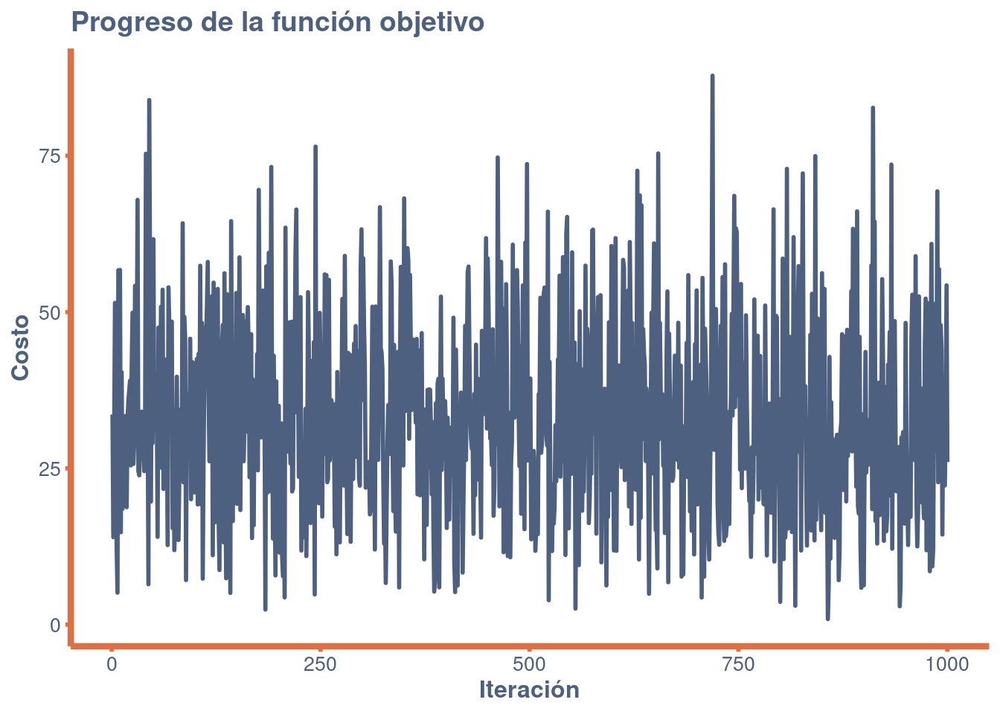

# Definir la función objetivo
objective_function <- function(vector) {
return(sum(vector^2))
}
# Generar un vector aleatorio
random_vector <- function(minmax) {
return(runif(length(minmax), min = minmax[,1], max = minmax[,2]))
}
# Realizar la bósqueda aleatoria
search <- function(search_space, max_iter) {
best <- NULL
costs <- c() # Vector para almacenar los costos
for (iter in 1:max_iter) {
candidate <- list()
candidate$vector <- random_vector(search_space)
candidate$cost <- objective_function(candidate$vector)
costs <- c(costs, candidate$cost) # Almacenar el costo de la iteración actual
if (is.null(best) || candidate$cost < best$cost) {
best <- candidate
}
}
return(list(best = best, costs = costs)) # Devolver el mejor resultado y los costos
}
# Configuración del problema
problem_size <- 2
search_space <- matrix(c(-5, 5), nrow = problem_size, ncol = 2, byrow = TRUE)
# Configuración del algoritmo
max_iter <- 1000
# Ejecutar el algoritmo
result <- search(search_space, max_iter)
best <- result$best
costs <- result$costsTaxonomía
Random Search pertenece a los campos de la Optimización Estocástica y la Optimización Global. Es un método de búsqueda directa, no requiere derivadas para buscar en un dominio continuo. Este enfoque está relacionado con técnicas que proporcionan pequeñas mejoras, como la Directed Random Search y la Adaptative Random Search.
Estrategia
La estrategia de Random Search consiste en muestrear soluciones de todo el espacio de búsqueda utilizando una distribución de probabilidad uniforme. Cada muestra futura es independiente de las anteriores.
Procedimiento
Heurística
Random Search es minimalista en el sentido de que sólo requiere una rutina de construcción de soluciones candidatas y una rutina de evaluación de soluciones candidatas, ambas pueden calibrarse con el enfoque.
En el peor de los casos, el rendimiento de Random Search para localizar el óptimo es peor que una Enumeración del dominio de búsqueda, dado que Random Search no tiene memoria y puede remuestrear a ciegas.
Random Search puede devolver una aproximación razonable de la solución óptima en un tiempo razonable con problemas de baja dimensionalidad, aunque el enfoque no se escala bien con tamaño del problema (como el número de dimensiones).
Hay que tener cuidado con algunos dominios de problemas para garantizar que la construcción aleatoria de soluciones candidatas no esté sesgada.
Los resultados de una Random Search pueden utilizarse para sembrar otra técnica de búsqueda, como una técnica de búsqueda local (como el algoritmo Hill Climbing) que se puede utilizar para localizar la mejor solución en la vecindad de la “buena” solución candidata.
Código
El problema de ejemplo es un caso de optimización continua que busca:
\(min f(x)\) donde \(f = ∑_{i=1}^n X_i^2\), \(-5.0<=x_i<=5.0\) y \(n=2\).
La solución óptima para esta función es \((v_0,…,v_{n-1})=0.0\)
Revisamemos el comportamiento del algoritmo para encontrar la solución óptima:
library(ggplot2)
# Crear un dataframe con los costos
df <- data.frame(
Iteration = 1:length(costs),
Cost = costs
)
# Crear modificaciones al plot
crear_tema <- function() {
theme_minimal() +
theme(
plot.background = element_rect(fill = "white", color = NA),
panel.grid.major = element_line(color = "white", size = 0.2),
panel.grid.minor = element_line(color = "white", size = 0.2),
panel.background = element_rect(fill = "white", color = NA),
plot.title = element_text(face = "bold", size = 14, color = "#4d6080"),
axis.title = element_text(face = "bold", size = 12, color = "#4d6080"),
axis.text = element_text(size = 10, color = "#4d6080"),
axis.line = element_line(size = 1.5, colour = "#de6f41"),
legend.background = element_rect(fill = "#4d6080", color = NA),
legend.key = element_rect(fill = "grey90", color = NA),
axis.ticks.x = element_line(color = "#de6f41", size = 1),
axis.ticks.y = element_line(color = "#de6f41", size = 1)
)
}
ggplot(df, aes(x = Iteration, y = Cost)) +
geom_line(colour = "#4d6080", size = 1) +
labs(
title = "Progreso de la función objetivo",
x = "Iteración",
y = "Costo"
) +
crear_tema()
La solución óptima es entonces:
result$best$vector[1] 0.14119307 1.06820860 -0.02988087 -0.25322848Citation
BibTeX citation:
@online{chiquito valencia2023,
author = {Chiquito Valencia, Cristian},
title = {Random {Search}},
date = {2023-11-13},
url = {https://cchiquitovalencia.github.io/posts/2023-11-13-random_search_algorithm/},
langid = {en}
}
For attribution, please cite this work as:
Chiquito Valencia, Cristian. 2023. “Random Search.”
November 13, 2023. https://cchiquitovalencia.github.io/posts/2023-11-13-random_search_algorithm/.